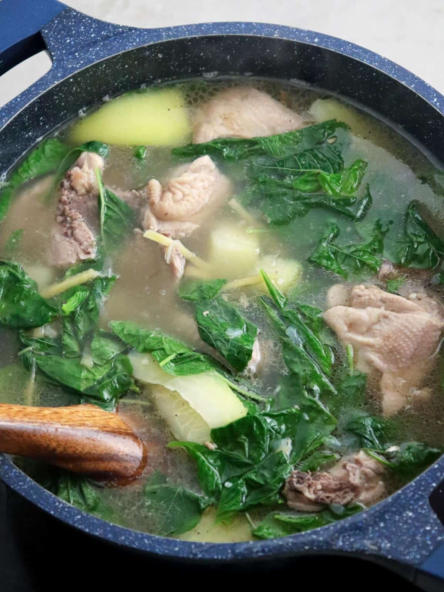

Description
Chicken Tinola is a Filipino soup dish. It involves cooking chicken
pieces in ginger broth. It is a popular cold weather dish.
I always feel warm and cozy every time I eat it.
This Filipino Chicken Soup is best enjoyed with fish sauce as
dipping sauce, and a cup of warm white rice.
Ingredients
- 1 kg chicken thighs
- 1 medium-sized onion
- 2 tbsp fish sauce
- 2 tbsp minced ginger
- 3 gloves garlic
- 3 tbsp cooking oil
- 1 cup green papaya
- 1 bunch spinach
- 2 liters of water
- Salt and pepper to taste
Steps
- Pour cooking oil in a pan and let it heat up for a minute.
- Add the garlic, onion and ginger and saute until fragrant
- Add chicken and let it cook until it is browned.
- Add the water, fish sauce and green papaya
- Cover and let the ingredients simmer for 20 to 30 minutes
or until the chicken and green papaya are fully cooked.
- Uncover and add the spianch.
Cover and simmer for another 5 minutes.
- Serve with hot rice!
Return to top
Return to main page